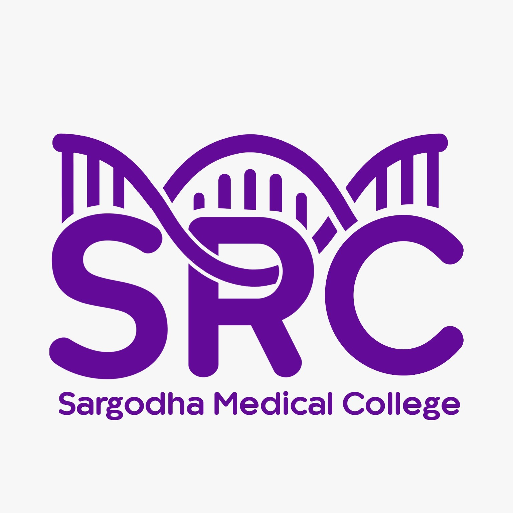

Student Research Committee · Sargodha Medical College
A student-led research society fostering a culture of research, innovation and academic excellence — empowering future healthcare professionals with the skills and confidence to lead impactful research.
Academic Research & Excellence Symposium — Sargodha Medical College's first international research conference. Register, submit an abstract, and meet researchers shaping medicine.
Fostering a culture of research, innovation, and academic excellence. We equip future healthcare professionals with the skills, ethics, and confidence to lead impactful research in medicine and public health.
Sessions led by invited faculty covering research methodology, scientific writing and data analysis. Schedule and enrolment details will be posted here soon.
Work produced by SRC members — papers, case reports and reviews — will be featured here as it is published.